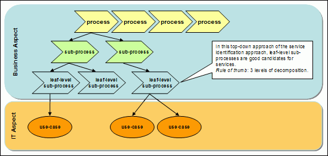
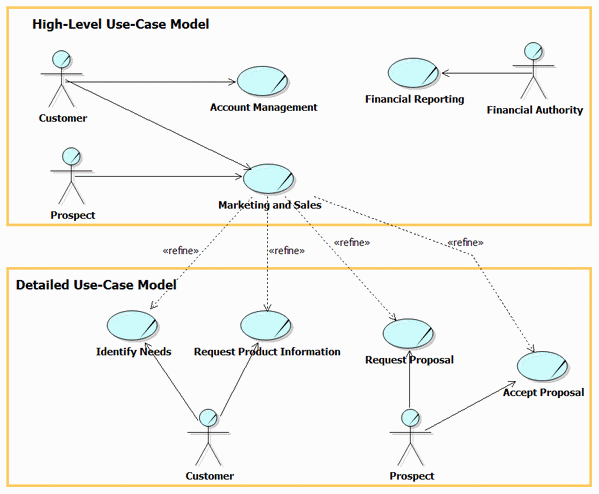

| Concept: Business Process Decomposition |
 |
|
| Related Elements |
|---|
IntroductionBusiness process models are used for many purposes, including business transformation and for identifying candidate services. High-level process models often suffice for business transformation analysis, but much lower-level models -- driving down to the level of fairly fine-grained process steps -- often are required for candidate service identification. The following figure shows process decomposition into sub-processes and use cases. The notion of a sub-process is a convenient construct used to denote further levels of refinement of a process, into its constituent parts (sub-processes), recursively. Once decomposition into sub-processes reaches the point where further decomposition would have us dealing with fine-grained user actions, we are at the level of leaf-level sub-processes and need to stop. These leaf-level sub-processes are used to identify portions of the overall business process that are amenable to automation. IT-level use-cases can then be defined which capture the goals of the actors which interact with the IT infrastructure.
 Candidate services can be identified at essentially every level of the decomposed business process. For example, a service might be identified which a consumer would use to initiate an entire business process. More granular services could be used to provide entry to each sub-process. Even lower-level candidate services could be mapped to the leaf-level sub-processes, and perhaps to the IT use-cases, themselves. Business Process Models as Business Use Case Realizations Business process models can be viewed as being equivalent to the realization of business use cases. So, business use case refinement can be considered to be one aspect of business process decomposition. Consider the following diagram:  The lower-level, more detailed use cases are still use cases for the same business system as the high-level use cases, that is they still represent a black-box view of the behavior of that business system. For each of these levels of use-case, there is a corresponding realization, which we can describe as a business process. It is possible therefore to regard this kind of analysis as one aspect of process decomposition.
|
| Concepts |
|---|
| © Copyright IBM Corp. 1987, 2012 All Rights Reserved Property of IBM These materials are intended only for use as part of an IBM engagement |